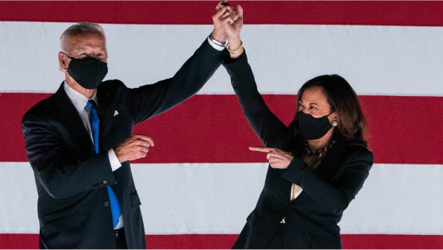
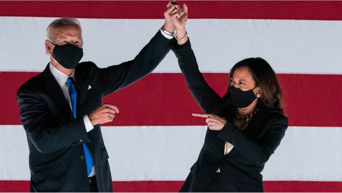

The Biden Plan for Mobilizing American Talent and Heart to Create a 21st Century Caregiving and Education Workforce
Joe Biden has taken care of aging parents, and he’s been a single parent. Biden knows how hard it is to raise a family and to care for a sick family member. And, he knows how hard it is for millions of Americans who are just trying to make ends meet.
The pandemic has laid bare just how hard it is for people in this country to find access to quality caregiving they need for themselves, or to juggle the responsibilities of working and also caring for family members. People in nursing homes have been hit especially hard by the coronavirus, shining a bright light on the fact that many would prefer to be in a home or community based setting. And, many parents are struggling to find child care while they go to their essential jobs, or find themselves as 24/7 caregivers trying to keep their children safe and learning while working remotely. Other parents are caring for their kids, while worrying about how they will make ends meet after having hours cut or losing their jobs. And, at the same time, professional caregivers have either lost their jobs or continue to work while putting their lives at risk without sufficient pay and benefits. President Trump’s failure to take action to control the coronavirus has worsened all of these challenges facing families across the country.
Even before the pandemic, our country was experiencing a caregiving crisis. Some care needs were going untended. Other care needs were filled by Americans serving as unpaid caregivers lacking the financial support or respite care they needed, and sometimes putting their careers on hold. Often, families made caregiving decisions that came with great financial, professional, physical and emotional costs. Caregivers and early childhood educators – disproportionately women of color – have been underpaid, unseen, and undervalued for far too long.
Biden believes that if we truly want to reward work in this country, we have to ease the financial burden of care that families are carrying, and we have to elevate the compensation, benefits, training and education opportunities for certification, and dignity of caregiving workers and educators.
Biden’s economic recovery plan won’t just build back our economy to the way it was before, but build it back better – including by building a robust 21st century caregiving and education workforce. As a first step, Biden will immediately provide states, tribal, and local governments with the fiscal relief they need to keep workers employed and keep vital public services running, including direct care and child care services.
Once we are able to move from relief to recovery, Biden will make substantial investments in the infrastructure of care in our country — to make child care more affordable and accessible for working families, and to make it easier for aging relatives and loved ones with disabilities to have quality, affordable home- or community-based care. And, he is proposing to give caregiving workers and early childhood educators a raise and stronger benefits, treating them as the professionals they are.
These steps will mean families will be able to afford better, more productive care and early education for their loved ones. They will also have a significant jobs impact: This plan, combined with Biden’s proposal to provide families with up to 12 weeks of paid family and medical leave, will put 3 million Americans to work in new care and education jobs, and increase overall employment by about 5 million after taking into account the economic impacts of increased labor force participation after unpaid caregivers – disproportionately women – are freed up to pursue paid careers if they so choose.
Biden will:
- Expand access to a broad array of long-term services and supports in local settings, including through closing the gaps in Medicaid for home- and community-based services and establishing a state innovation fund for creative, cost effective direct care services.
- Ensure access to high-quality, affordable child care and offer universal preschool to three-and four-year olds through greater investment, expanded tax credits, and sliding-scale subsidies.
- Build safe, energy-efficient, developmentally appropriate child care facilities, including in workplaces, so that parents and guardians never again have to search in vain for a suitable child care option.
- Treat caregivers and early childhood educators with respect and dignity, and give them the pay and benefits they deserve, training and career ladders to higher-paying jobs, the choice to join a union and bargain collectively, and other fundamental work-related rights and protections.
The plan will cost $775 billion over 10 years and will be paid for by rolling back unproductive and unequal tax breaks for real estate investors with incomes over $400,000 and taking steps to increase tax compliance for high-income earners.
This plan builds on Biden’s proposals to support informal caregivers – family members or loved ones who do this work unpaid, including a $5,000 tax credit for informal caregivers, Social Security credits for people who care for their loved ones, and professional and peer support for caregivers of wounded, injured, or ill active duty service members and veterans.
EXPAND ACCESS TO DIGNIFIED CARE FOR OLDER AMERICANS AND THOSE WITH DISABILITIES
Biden will help ease the financial burden on families caring for aging relatives and loved ones with disabilities and reduce unnecessary and costly hospitalizations, while providing people who need care with better, more dignified services and supports that meet their specific needs and personal choices.
Biden will allocate $450 billion to give more people the choice to receive care at home or in supportive community situations, or to have that choice for their loved ones. He will help states offer cost-effective options for affordable primary and preventive care, and affordable support services like help with meals, transportation, home safety, and quality day programs for older Americans. This commitment will reduce health expenditures, help more Americans avoid unnecessary and expensive hospitalizations, and result in an expansion of the caregiving and community health workforce by roughly 1.5 million jobs. Specifically, Biden will:
- Eliminate the current waitlist for home and community services under Medicaid. Approximately 800,000 people are on the waitlist for home and community care under Medicaid. It can take as many as five years for these individuals to get the services they badly need. Biden will increase Medicaid funding to states, the District of Columbia, and outlying territories to pay for the full cost of ensuring these 800,000 individuals and families receive long-term services and supports in the most appropriate setting, with the support of qualified care providers. Following the elimination of the current waiting list, states will be given a choice to convert their current home and community based care services waivers into a new state plan option with an enhanced federal match. This will enable states to make home and community-based services more available to people in need.
- Establish a long-term services and supports innovation fund to help expand home- and community-based alternatives to institutional care. Biden believes we must move aggressively to eliminate the institutional bias that pervades our public programs. A Biden Administration will dedicate substantial resources to this fund to help states and locally based entities test innovative models that expand home- and community-based alternatives to institutional care. These could include approaches that provide care while allowing individuals to retain independence, such as day programs and respite services that enable unpaid caregivers to work, alternative home and community models that coordinate or directly provide care, and Medicaid buy-in models. For example, the CAPABLE (Community Aging in Place-Advancing Better Living for Elders) Program provides home repairs and modifications to help create safer, more functional home environments for older adults. An initial trial in Baltimore found about $3,000 in program costs yielded more than $20,000 in savings. The pilot is now being tested in 27 cities in 16 states. Successful, cost-effective approaches to long-term care will be scaled up nationally. This fund will be administered by the Center for Medicare and Medicaid Innovation, which was established by the Affordable Care Act to support innovations that improve health care while constraining costs.
- Improve caregiving and health outcomes in our nation’s most underserved communities by adding 150,000 community health workers. Addressing our nation’s caregiving challenges also requires investing more in communities that suffer from significant racial health disparities driven by chronic underfunding and systemic racial discrimination. Biden will more than triple the number of community health workers – often workers of color serving the communities where they live – who are part of a national effort to both prevent and treat chronic conditions in underserved, economically-disadvantaged urban and rural communities. He will do this by providing direct grant funding, as well as adding community health worker services as an optional benefit for states under Medicaid. Community health solutions can lead to better health outcomes, allow people to live with more independence, and ease caregiving challenges through a focus on prevention and care coordination, reducing unnecessary and expensive hospitalization. And, in times of a health crisis, they can be repurposed to quickly fill basic public health needs. Repeated studies from across the country, including North Carolina and Philadelphia, have shown that investments in community-based health care and health workers save money by reducing hospitalizations and costly treatments that could have been avoided or better managed, while also improving health and improving career ladders for workers, with annual savings of up to $2,290 per beneficiary. A recent study revealed that every dollar spent on community health workers would yield $2.47 in savings.
- Fill additional gaps in the nation’s health care infrastructure that impact families’ caregiving responsibilities.
- Address the opioid epidemic and substance use disorders by training 35,000 workers to provide critical support. Today, we have a shortage of workers to help Americans experiencing substance use disorders. Biden will increase funding and training for workers to provide counseling, care, and peer support for these individuals.
- Engage in a national strategy to recruit, retain and empower nursing professionals. Biden will fully and rapidly implement the CARES Act which allocated nearly $1 billion over four years to address nursing burnout, faculty recruitment and retention, and increase nursing workforce diversity. A Biden administration will provide additional funding to ensure we are building up the training, clinical and educational capacity to welcome – not turn away – the qualified individuals interested in nursing education and training, bolstering the nursing profession for years to come.
- Create tens of thousands of jobs providing care to veterans by filling severe occupational shortages and vacant positions at almost every U.S. Department of Veterans Affairs facility. Biden will remove existing hiring and pay barriers that make it difficult to replace valued employees once they depart. These investments will ensure we fulfill our sacred obligation to provide high-quality care to our veterans.
- Provide resources for Indian Health Service to create new health care jobs. The Indian Health Service (IHS) has been underfunded for decades, and does not have enough doctors or nurses to provide necessary care for American Indians and Alaska Natives. Biden has called for dramatically increasing funding for Indian Health Service – and making it mandatory – allowing IHS to recruit, train, and pay health professionals.
- Create a Public Health Jobs Corps. In partnership with state and local governments, and in consultation with unions, Biden will mobilize at least 100,000 additional Americans with support from trusted local organizations in communities most at risk across the country to perform culturally competent approaches to identify people at risk of contracting or spreading infectious diseases, including COVID-19; staff social isolation hotlines (similar to the data-informed model of the Crisis Text Line); provide COVID-19 vaccinations to immunize the population as quickly as possible; and conduct local outreach efforts to support people who are at high risk of COVID-19, especially low and moderate-income families, communities of color, and older adults. Beyond the current pandemic, those who enter the U.S. Public Health Jobs Corps will be positioned to take on jobs as community health workers and other jobs that help build longer term health infrastructure — including fighting the opioid epidemic and addressing social determinants of health.
It is also just too hard to figure out how to get care when you need it. As part of his proposal, Biden will work with states to set up a simpler way for Americans searching for caregiving help to go online, find out what financial support they might be eligible for based on their income, and identify potential caregivers.
MAKE HIGH-QUALITY CHILD CARE AFFORDABLE AND PRESCHOOL UNIVERSAL
The pandemic has highlighted what has always been true: child care and early learning are essential to many Americans, providing a nurturing environment for children to learn and grow and allowing parents and guardians the choice to pursue careers and contribute to the economy while supporting their families. The pandemic has also reminded parents around the country just how valuable caregivers and educators are – and how challenging and important their jobs are.
Even before the pandemic, millions of parents struggled to find a space for their child in a quality care and educational setting, keeping parents – primarily mothers – out of the workforce or causing them to settle for lower-paying jobs that allowed them time to provide their own child care. And now, many more parents are worrying how they will educate and care for their children while they work, while schools and child care providers are facing extreme financial challenges and uncertainty. Many child care facilities have lost much of their revenues and are struggling to pay their bills and stay afloat. Providers who already operate on extremely thin margins are spending money on personal protective equipment and cleaning supplies to keep children and early childhood educators safe, while facing falling revenues as they serve fewer children to make it easier to physically distance. If they don’t get help soon, a sizable portion of child care providers might have to close their doors permanently and as many as half of all child care slots could disappear. The danger of a radical decline in the child care sector will increase the challenges parents face as they seek to return to work, make it harder for the economy to recover, and force many early childhood educators – who are disproportionately women of color – out of their jobs.
President Trump has failed to effectively respond to the caregiving crisis for months, while exacerbating it by letting the virus continue to spread. He should immediately work with Congress to provide emergency relief to save child care centers and family child care providers and support child care workers. This urgent action is critical to investing in the care and education of our youngest children and ensuring that parents and guardians have the support they need to return to work when it is safe to do so.
Beyond addressing the pandemic-driven child care crisis, Biden will build our child care infrastructure back better for the long-term, including by making high-quality child care affordable and preschool universal for three- and four-year-olds. His plan will cultivate the potential of young children, provide parents – primarily mothers – with career opportunities and economic security, create an additional 1.5 million new, good, early education jobs, and improve the existing jobs for the essential workers who educate our young children. Biden will:
- Provide all 3- and 4-year-olds access to free, high-quality pre-kindergarten, laying a strong foundation for children and saving parents thousands of dollars a year on child care costs. Students who enter kindergarten school-ready are nearly two times more likely to master basic skills by age 11, and high-quality preschool is critical to this preparation. One study found students who enter kindergarten school-ready are also less likely to repeat a grade and are more likely to graduate from high school. And studies show that high-quality preschool reduces the school readiness gap caused by systemic racism. So parents and guardians can choose what works for them, Biden will partner with states to provide a mixed delivery system that includes public school systems, child care centers and family child care providers, and Head Start.
- Offer low-income and middle-class families an up to $8,000 tax credit to help pay for child care. Families will get back as a tax credit as much as half of their spending on child care for children under age 13, up to a total of $8,000 for one child or $16,000 for two or more children. The tax credit will be refundable, meaning that families who don’t owe a lot in taxes will still benefit, and Biden will actively work with child care experts to explore ways to make it advanced, so cash-strapped families can immediately benefit from the credit. The full 50% reimbursement will be available to families making less than $125,000 a year. And, all families making between $125,000 and $400,000 will receive a partial credit ensuring that in no case will they get less under the Biden plan than they are eligible for today.
- Provide access to affordable, high-quality child care on a sliding scale for low-income and middle-class families who would prefer this option over the tax credit for young children. For young children ages 0-5, Biden will adopt the child care program envisioned in Senator Murray and Congressman Bobby Scott’s bipartisan Child Care for Working Families Act. He will:
- Save families money by helping them with child care costs. Biden will partner with states to provide sliding scale subsidies so that the cost of child care for low-income and middle-class families will be based on what they can afford. For children under the age of 5, no family earning below 1.5 times the median income in their state will have to pay more than 7% of their income for quality care, which was the affordable child care benchmark set by the Obama-Biden Administration. A typical family will pay no more than $45 per week. For the most-hard pressed working families, such early childcare costs would be fully covered, saving these families about $200 per week. Biden will also set aside a portion of the funds for tribes to expand access to quality child care for Native children, as well as for outlying areas including U.S. territories.
- Invest in quality child care standards and a well-trained and well-compensated child care workforce. The quality of care matters: nearly all of brain development happens before a child turns three-years-old. For low-income children, every dollar invested in high-quality child care can result in a $7.30 return with lifetime impacts for children, as they grow up healthier, do better in school, and earn more over the course of their lifetimes. Biden will ensure families have access to the quality care their children need by working in partnership with states to ensure providers meet rigorous quality standards. These standards will include a developmentally appropriate curriculum, small class sizes, and support positive interactions between educators and children that promote children’s socio-emotional development. He will also provide funding reflective of the true cost of quality care. Recognizing that quality begins with supporting the early childhood workforce, Biden will invest in strategies to retain and grow the pool of diverse, talented early childhood educators and give them the time, resources and support – like coaches, training and education opportunities for certification, and financial stability – that they need to provide children an excellent education.
- Expand access to care that works for working parents. Biden will provide incentives for providers to fill critical child care shortages, including in the early mornings, evenings, and weekends, and in many rural communities that have few providers today. He will offer bonus payments to providers who operate during nontraditional hours and create a Child Care Growth and Innovation fund that will provide grants to programs filling essential needs, including expanding access to high-quality care for families with high barriers to care. He will also ensure all families will be able to choose high-quality child care that works for them, whether a child care center, home-based care with a family child care provider, or an informal arrangement with a friend, family member, or neighbor. And, Biden will build on the Obama-Biden Administration’s efforts to ensure Early Head Start is an option for families that will benefit from comprehensive family support and child development resources, including through doubling Early Head Start-Child Care Partnerships.
- Ensure families with school-aged children have expanded access to after-school, weekend, and summer care. Biden will expand Child Care Development Block Grant subsidies to increase the number of school-aged children up to age 13 in low-income families who can benefit from the program. Low- and middle-income families will also be able to take advantage of Biden’s expanded, refundable tax credit to help cover after-school, weekend, and summer care costs. And Biden will expand support for community schools, which often provide before, after-school, and summer learning opportunities, and increase funding for after-school programs, community centers, and extracurriculars to keep children safe, learning, and having fun when school is not in session. This includes expanding the 21st Century Community Learning Centers that provide critical enrichment opportunities for school-aged children.
- Invest in child care and other wraparound services at community colleges, so parents don’t have to choose between their own education and their children. One in four community college students is a parent — and these parents are disproportionately students of color, and over half are Black women — yet most colleges do not offer child care. It can be hard for many of these parents to graduate while juggling an extra job to pay their bills or caring for their children. Biden will provide funds for states, the District of Columbia, and outlying territories to invest in wraparound services at community colleges, which could include child care for students’ children, while also creating new jobs for early childhood educators in the process.
- Make sure more military children have access to the quality child care Department of Defense provides. Biden will fully fund installation-based child care facilities and expand awareness of the U.S. Department of Defense fee assistance program, as supported by leading advocates for military families, so that military spouses can more easily pursue their education and careers and tap into respite care to relieve the stresses of deployments, and members of our military can rest easier knowing their children are well cared for.
Not only will these investments create jobs for new early educators, Biden’s plan to support our public schools will also create new jobs by tripling Title I funding, fully-funding IDEA, funding community schools, and doubling the number of psychologists, counselors, nurses, social workers, and other health professionals in our schools so our kids get the mental health care they need.
BUILD SAFE CHILD CARE FACILITIES
Our nation faced a massive shortage of child care facilities before the pandemic, and the shortage has only intensified since then. One survey found that, even before COVID-19 hit, 43% of parents had difficulty locating child care, and many more struggled to find convenient, affordable care. This shortage stresses parents and guardians, hurts family pocketbooks, and disadvantages children in areas with insufficient child care options.
Biden will address this shortage by accelerating the construction and renovation of safe and developmentally appropriate child care facilities in communities and in workplaces, so parents do not have to search in vain for a suitable child care option. Specifically, Biden will create a new child care construction tax credit to encourage businesses to build child care facilities at places of work. Employers will receive 50% of the first $1 million of construction costs per facility, so that employees can enjoy the peace of mind and convenience that comes with on-site child care. At the same time, he’ll make direct investments in building new child-care facilities and upgrading existing facilities around the country that are not accessible for people with disabilities, or safe or developmentally appropriate for young children who are especially vulnerable to environmental contaminants like lead and mold, and to safety hazards like electrical outlets. If his tax credit is fully utilized, and coupled with direct investments, these policies will lead to tens of thousands of new child care facilities across the country.
All infrastructure investments will require high standards for the quality of the facilities, including ensuring they are healthy, energy efficient, climate resilient, developmentally appropriate places to learn and accessible for children with disabilities. And, they will require high labor standards for the people who build the facilities, creating thousands of middle-class construction jobs with a choice to join a union.
REWARD CAREGIVERS AND EDUCATORS WITH THE BENEFITS AND PROTECTIONS THEY DESERVE
While we rely on our nation’s caregivers and educators to play essential roles in the lives of our loved ones, their current pay and benefits are abysmal. Caregivers and early childhood educators — who are disproportionately women and people of color — are poorly compensated. Direct support professionals and child care workers earn on average less than $12 an hour and $25,000 annually. This low pay contributes to extremely high rates of turnover in the care workforce, which hurts these workers and those for whom they care.
Biden will maintain and grow a diverse, talented care and education workforce by providing increased pay and benefits, and access to collective bargaining, training and education, and career ladders. He will ensure these workers receive:
- Increased pay. No one should have to work more than one job to make ends meet. Biden will ensure caregivers and early childhood educators receive a raise, and get the pay they deserve, including by setting standards for the funding allocated under this plan. And, there is no reason an educator teaching toddlers should be making less than a similarly qualified kindergarten educator — Biden will also ensure early childhood educators in child care settings and public schools receive similar pay and benefits to elementary school teachers if they have similar qualifications and experience.
- Benefits they have earned. Benefits include affordable health care through their jobs or Biden’s new public option, federally-provided paid family and medical leave for up to 12 weeks, up to 7 days of paid sick leave, and affordable child care for their own children.
- Stronger legal protections and the choice to join a union and collectively bargain. Biden will work to ensure all workers – including direct support workers and early childhood educators – have an effective, meaningful way to unionize and collectively bargain, whether they work in a center- or home-based setting. He will make it easier to organize by signing the Protecting the Right to Organize (PRO) Act and providing local and state government workers with bargaining rights, fully restoring collective bargaining to federal government workers, and also improving the conditions of many care jobs by signing into law the Domestic Workers’ Bill of Rights.
- Training and career ladders. Home care workers and early educators deserve opportunities for quality training and education and meaningful credentials so they can earn higher wages, develop rewarding and lasting careers, and stay in their jobs for longer, critical ingredients to delivering high-quality care and education. Biden will expand opportunities for these workers to earn needed credentials by investing in high quality training and education programs that lead to a certificate, as well as ongoing, job-embedded training and professional development through programs like labor-management training and registered apprenticeships. He will work with employers, unions and worker organizations, community colleges, the public workforce system, and organizations representing older Americans and people with disabilities and early childhood educators to modernize and develop new training programs for these jobs. Critically, he’ll provide funding for states to hire coaches for early childhood educators to continuously help them deliver high-quality learning experiences. And, he will create opportunities for these workers to further upskill, while building a pipeline of diverse early educators and health workers, through his plan for Education Beyond High School.
 
